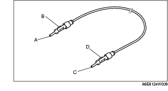
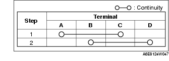

1. Verify that there is no continuity between the front antenna feeder terminals A and B.

2. Inspect for continuity between the front antenna feeder terminals.
-
• If there is no continuity, replace the instrument panel harness.
